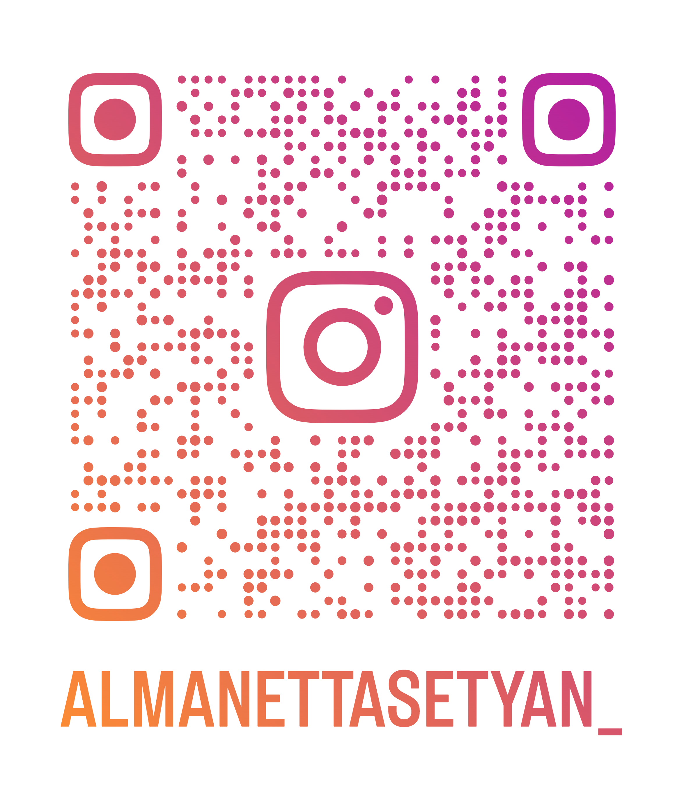

Hallo! Saya Maria Immaculata Almanetta Setyaningrum, biasa dipanggil Netta. Saya merupakan orang yang jujur, tegas, gigih, serta gampang berbaur dengan sekitar. Saya lulusan dari SMK Ananda Bekasi, jurusan Teknik Komputer dan Jaringan.
Saat ini saya merupakan mahasiswi S1 Universitas Siber Asia jurusan Teknik Informatika dengan perkulihan berbasis online. Untuk itu, saat ini saya sedang mencari kesempatan bekerja di perusahaan ini.
Nama : Maria Immaculata Almanetta Setyaningrum
Tempat Tanggal lahir : Yogyakarta, 22 Desember 2000
Jenis Kelamin : Perempuan
Agama : Katholik
Tinggi Badan : 155 cm
Berat Badan : 60kg
Alamat : Jl. Irida Timur XIII Blok D17 No.12 RT/RW.002/014
Kel. Bekasi Jaya, Kec. Bekasi Timur, Kota Bekasi, Jawa Barat
No. Handphone : 088291532010
Email : almanetta.setyan@gmail.com
| Sekolah | Tahun Ajaran |
| SD Santa Maria Monica | 2007-2013 |
| SMP Strada Budi Luhur | 2013-2016 |
| SMK Ananda Bekasi | 2016-2019 |
| Instagram : | almanettasetyan_ | QR Code Instagram : |  |
| Facebook : | Maria Immaculata | QR Code Facebook : | |
| WhatsApp : | +6288291532010 | QR Code WhatsApp : |